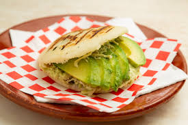

Home
Arepa Reina Pepiada

Description
The Arepa Reina Pepiada is a traditional Venezuelan dish, consisting of a special chicken and avocado filling for the ever-so-iconic Arepa.
This recipe will outline the process of both preparing the arepa itself, as well as making the iconic filling that makes it unique amongst many other Venezuelan arepas.
Ingredents for 4 arepas
Arepa dough
- 2 cups of Pre-Cooked Corn Meal Flour. (I HEAVILY recommend that you use P.A.N. Yellow Corn Flour for authenticity)
- 2 and ¼ cups of warm water.
- 1 tsp of salt.
- 2 tbsp of cooking oil.
Reina Pepiada filling
- 1 shredded cooked chicken breast.
- 2 cilantro branches.
- 1 small clove of garlic.
- 1 medium size onion.
- 1 ripe avocado.
- 3 tbsp of mayonnaise.
- 1 tbsp of olive oil.
- 1 tbsp of lemon juice.
- salt to taste.
Preparation
For the arepas:
- Pour the warm water in a mixing bowl, then add the salt and 1 tbsp of oil.
- Slowly add the flour into the mixing bowl while stirring constantly. Do this until the dough amasses without clumps.
- Divide the dough into 4 equal-sized balls, using your hands to shape them into a sphere.
- Pre-heat the remaining tablespoon of oil on a large skillet at medium-high heat.
- Once hot, place the dough balls into the skillet, cover, and let cook for 5 minutes. Afterwards, uncover and flip the arepas to the other side, and let cook for 5 minutes.
- Once done cooking, set the arepas aside to rest.
For the filling:
- Peel the avocado and mash the insides. Spray with a few drops of lemon juice to preserve its color.
- Cut the onion into small cubes, chop the cilantro into fine pieces and mince the garlic clove.
- Place the cut vegetables into a bowl and mix in the olive oil, lemon juice, salt, mayonnaise, and mashed avocados. Mix until a homogeneous paste forms.
- Add the shredded chicken breast and mix everything with a wooden spoon.
The final product
- Use a knife to slit open the arepas by cutting through the middle of disc horizontally. Remove the excess dough. (feel free to eat it!)
- Replace the dough with the prepared filling. Enjoy!